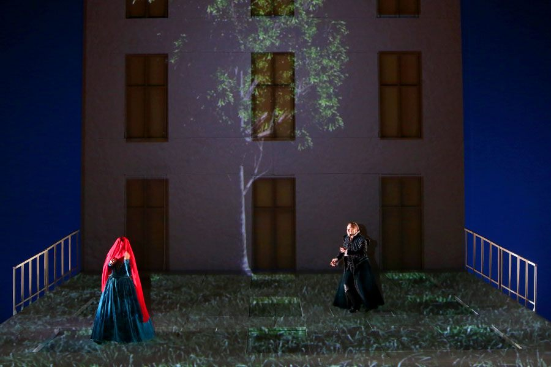
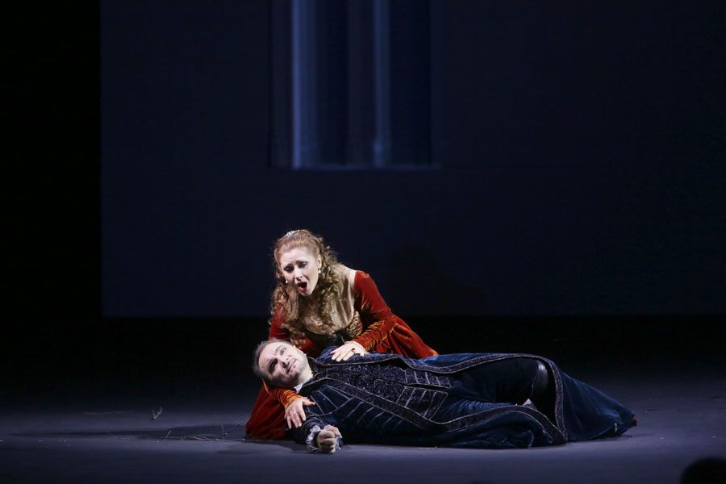
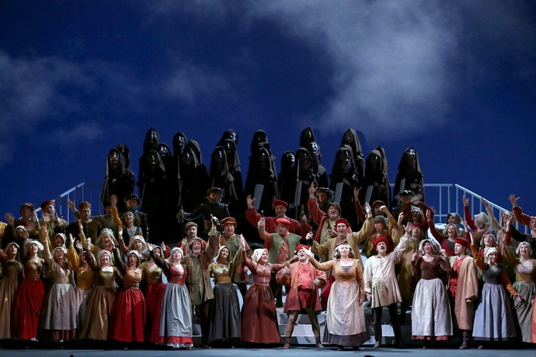
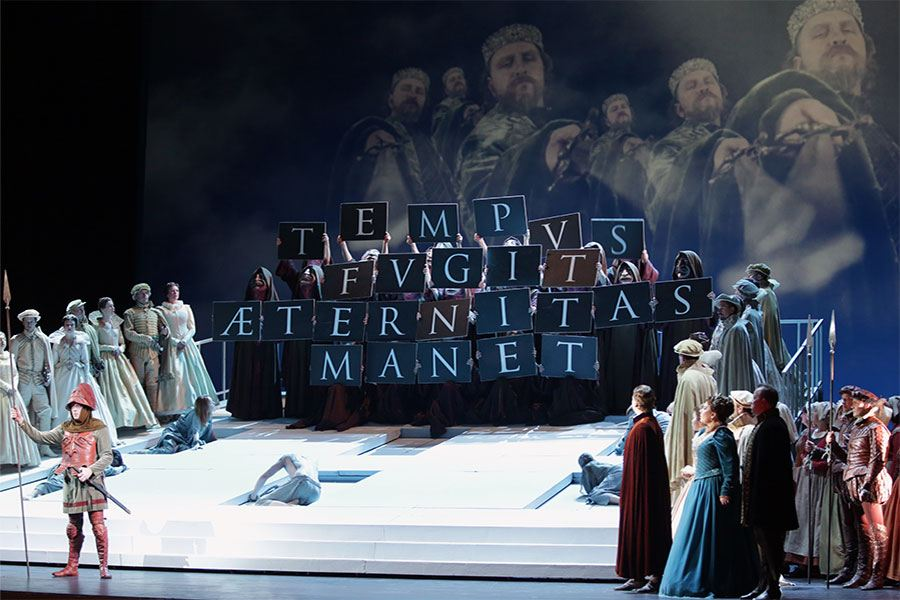
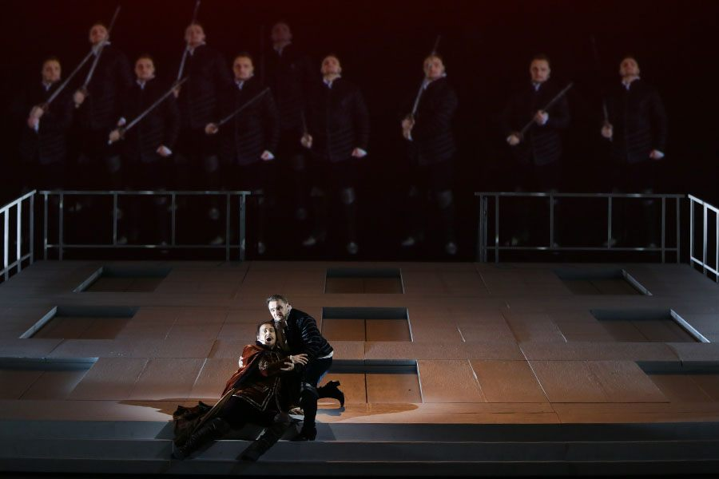
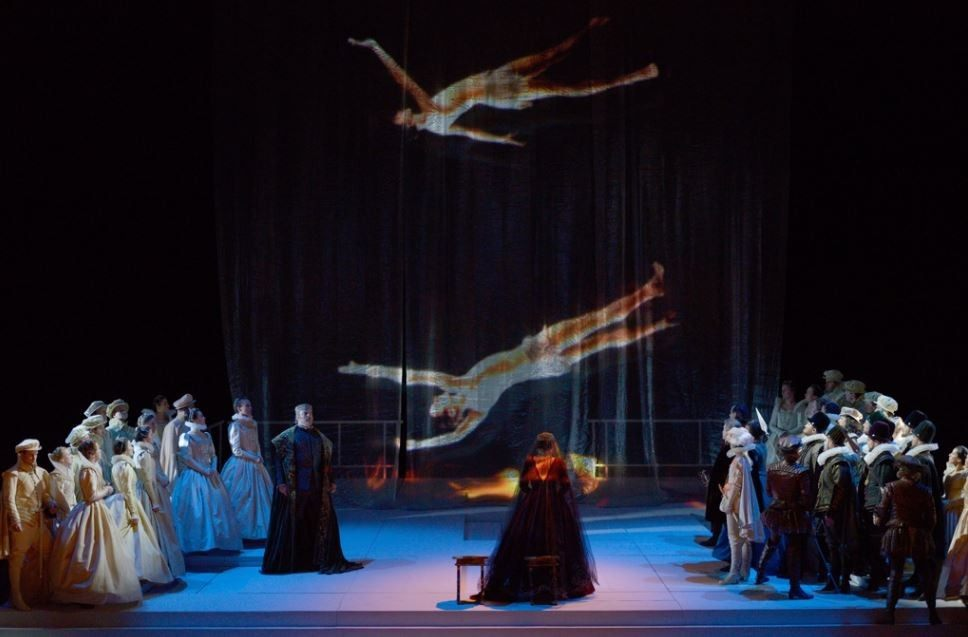
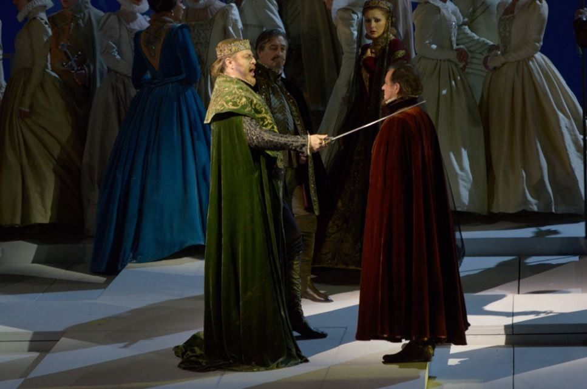
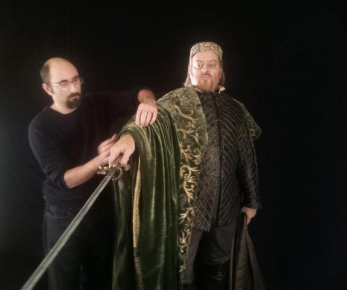

San Pietroburgo, 29 novembre 2012. La prima volta che il Don Carlos integrale di Verdi (versione di Modena 1886) attraversa il Mariinsky in italiano. Cinque atti, una corte come prigione di Stato.
Saint Petersburg, 29 November 2012. The first time Verdi's complete Don Carlos (Modena 1886 version) crosses the Mariinsky in Italian. Five acts, a court as a state prison.
Saint-Pétersbourg, 29 novembre 2012. La première fois que le Don Carlos intégral de Verdi (version de Modène 1886) traverse le Mariinsky en italien. Cinq actes, une cour comme prison d'État.
Per il Teatro Mariinsky di San Pietroburgo, Cristian Taraborrelli firma le scene e i costumi del Don Carlos di Verdi con la regia di Giorgio Barberio Corsetti e la direzione musicale di Valery Gergiev. L’allestimento, andato in scena il 29 novembre 2012, è la prima produzione nella storia del teatro della versione integrale in cinque atti in italiano, la cosiddetta “versione di Modena” del 1886 — l’ultima revisione del compositore.
For the Mariinsky Theatre in St. Petersburg, Cristian Taraborrelli designed the sets and costumes for Verdi’s Don Carlos, directed by Giorgio Barberio Corsetti and conducted by Valery Gergiev. The production, which premiered on November 29, 2012, was the first staging in the theatre’s history of the complete five-act Italian version, the so-called “Modena version” of 1886 — the composer’s final revision.
Pour le Théâtre Mariinsky de Saint-Pétersbourg, Cristian Taraborrelli signe les décors et les costumes du Don Carlos de Verdi, mis en scène par Giorgio Barberio Corsetti et dirigé par Valery Gergiev. La production, créée le 29 novembre 2012, est la première mise en scène dans l’histoire du théâtre de la version intégrale en cinq actes en italien, dite « version de Modène » de 1886 — la dernière révision du compositeur.
La Visione — L’ultimo Grand Opéra al Mariinsky storico
Questo Don Carlos rappresenta un momento storico: è una delle ultime grandi produzioni andate in scena nel teatro storico del Mariinsky prima dell’inaugurazione del Mariinsky II, la nuova sala da 1.800 posti aperta il 2 maggio 2013. Il palcoscenico ottocentesco che aveva ospitato le prime di Tchaikovsky, Mussorgsky e Rimsky-Korsakov accoglieva così per l’ultima volta una nuova produzione di grand opéra verdiano nella sua forma più completa.
Corsetti e Taraborrelli hanno concepito una scenografia che dialoga con la storia monumentale del teatro, utilizzando lo spazio scenico nella sua pienezza per evocare il conflitto tra potere politico e libertà individuale che attraversa tutta l’opera. La scelta della versione in cinque atti — mai rappresentata prima al Mariinsky — ha permesso di restituire l’atto di Fontainebleau nella sua integrità, aprendo il dramma con l’incontro tra Carlo ed Elisabetta nella foresta invernale.
This Don Carlos represents a historic moment: it was one of the last major new productions staged at the historic Mariinsky Theatre before the inauguration of Mariinsky II, the new 1,800-seat hall opened on May 2, 2013. The nineteenth-century stage that had hosted the premieres of Tchaikovsky, Mussorgsky and Rimsky-Korsakov thus welcomed for one of the last times a new production of Verdian grand opéra in its most complete form.
Corsetti and Taraborrelli conceived a set design that dialogues with the theatre’s monumental history, using the full scenic space to evoke the conflict between political power and individual freedom that runs through the entire opera. The choice of the five-act version — never before performed at the Mariinsky — allowed the Fontainebleau act to be restored in its entirety, opening the drama with the meeting between Carlo and Elisabetta in the winter forest.
Ce Don Carlos représente un moment historique : c’est l’une des dernières grandes productions créées sur la scène du Théâtre Mariinsky historique avant l’inauguration du Mariinsky II, la nouvelle salle de 1 800 places ouverte le 2 mai 2013. La scène du XIXe siècle qui avait accueilli les premières de Tchaïkovski, Moussorgski et Rimski-Korsakov accueillait ainsi pour l’une des dernières fois une nouvelle production de grand opéra verdien dans sa forme la plus complète.
Corsetti et Taraborrelli ont conçu une scénographie qui dialogue avec l’histoire monumentale du théâtre, utilisant l’espace scénique dans sa plénitude pour évoquer le conflit entre pouvoir politique et liberté individuelle qui traverse tout l’œuvre. Le choix de la version en cinq actes — jamais représentée au Mariinsky — a permis de restituer l’acte de Fontainebleau dans son intégrité, ouvrant le drame avec la rencontre entre Carlo et Elisabetta dans la forêt hivernale.
Galleria








Video
Curiosità
La versione “Modena 1886”. Verdi revisò il Don Carlos almeno quattro volte nel corso della vita. La versione in cinque atti in italiano del 1886, destinata al Teatro Comunale di Modena, è considerata la sua ultima parola sull’opera. Questo allestimento al Mariinsky è stato il primo nella storia del teatro a portarla in scena nella sua integrità.
Le ultime prime al Mariinsky storico. Il Mariinsky II, la nuova sala progettata dallo studio canadese Diamond & Schmitt Architects, è stato inaugurato il 2 maggio 2013 con un gala che vedeva Plácido Domingo, René Pape e Anna Netrebko. Questo Don Carlos del novembre 2012 è stato tra le ultime grandi produzioni create per il palcoscenico storico del 1860.
Un palcoscenico leggendario. Il Teatro Mariinsky, inaugurato nel 1860, è il luogo dove andarono in scena le prime mondiali di capolavori come Boris Godunov di Mussorgsky, La bella addormentata e Lo Schiaccianoci di Tchaikovsky. Su quello stesso palcoscenico Corsetti e Taraborrelli hanno costruito la loro visione del grand opéra verdiano.
4 ore e 10 minuti. La versione integrale in cinque atti dura oltre quattro ore, con due intervalli. Un’impresa scenografica e musicale che richiede una macchina teatrale di rara complessità, dal primo atto nella foresta di Fontainebleau all’auto-da-fé, fino alla scena finale al monastero di San Giusto.
The “Modena 1886” version. Verdi revised Don Carlos at least four times during his lifetime. The five-act Italian version of 1886, intended for the Teatro Comunale di Modena, is considered his final word on the opera. This Mariinsky production was the first in the theatre’s history to stage it in its entirety.
The last premieres at the historic Mariinsky. Mariinsky II, the new hall designed by Canadian firm Diamond & Schmitt Architects, was inaugurated on May 2, 2013 with a gala featuring Plácido Domingo, René Pape and Anna Netrebko. This Don Carlos from November 2012 was among the last major productions created for the historic 1860 stage.
A legendary stage. The Mariinsky Theatre, opened in 1860, is where world premieres of masterpieces such as Mussorgsky’s Boris Godunov, Tchaikovsky’s The Sleeping Beauty and The Nutcracker took place. On that very same stage, Corsetti and Taraborrelli built their vision of Verdian grand opéra.
4 hours and 10 minutes. The complete five-act version runs over four hours with two intervals. A scenic and musical undertaking requiring a theatrical machine of rare complexity, from the first act in the forest of Fontainebleau to the auto-da-fé, to the final scene at the monastery of San Giusto.
La version « Modena 1886 ». Verdi a révisé Don Carlos au moins quatre fois au cours de sa vie. La version en cinq actes en italien de 1886, destinée au Teatro Comunale de Modène, est considérée comme son dernier mot sur l’œuvre. Cette production du Mariinsky fut la première dans l’histoire du théâtre à la porter intégralement à la scène.
Les dernières créations au Mariinsky historique. Le Mariinsky II, nouvelle salle conçue par le cabinet canadien Diamond & Schmitt Architects, a été inauguré le 2 mai 2013 avec un gala réunissant Plácido Domingo, René Pape et Anna Netrebko. Ce Don Carlos de novembre 2012 fut parmi les dernières grandes productions créées pour la scène historique de 1860.
Une scène légendaire. Le Théâtre Mariinsky, ouvert en 1860, est le lieu où furent créés des chefs-d’œuvre comme Boris Godounov de Moussorgski, La Belle au bois dormant et Casse-Noisette de Tchaïkovski. Sur cette même scène, Corsetti et Taraborrelli ont construit leur vision du grand opéra verdien.
4 heures et 10 minutes. La version intégrale en cinq actes dure plus de quatre heures avec deux entractes. Une entreprise scénographique et musicale nécessitant une machinerie théâtrale d’une rare complexité, du premier acte dans la forêt de Fontainebleau à l’autodafé, jusqu’à la scène finale au monastère de San Giusto.
Backstage

Team Creativo
Giorgio Barberio Corsetti — Il regista
Nato a Roma nel 1951, Giorgio Barberio Corsetti è uno dei registi italiani più importanti delle ultime quattro decadi. Fondatore della Compagnia La Gaia Scienza alla fine degli anni Settanta, ha attraversato il teatro di ricerca italiano con messinscene che hanno fatto scuola: Kafka, Beckett, Calvino, Pirandello, Ariosto. Nel 1988 fonda il Festival Atti di Teatro alla Villa Medici, nel 1999 vince il Premio UBU per Il processo di Kafka.
Direttore del settore teatro della Biennale di Venezia dal 1999 al 2002, direttore del Théâtre Gérard Philipe di Saint-Denis dal 2007 al 2013, direttore artistico del Teatro di Roma dal 2018, Corsetti ha portato la sua poetica nella regia lirica con titoli al Festival d'Aix-en-Provence, al Teatro alla Scala, al Mariinsky, al Festival di Salisburgo. Il sodalizio con Cristian Taraborrelli — iniziato negli anni Novanta — attraversa oltre vent'anni: Il processo (1999), Dom Juan (TNS 2003), Gertrude (Le Cri) (Odéon 2009), Medea alla Fenice (2002), Mariage de Figaro a Ginevra (2018), oltre alle grandi produzioni operistiche italiane e russe.
In Don Carlos, Corsetti porta al Mariinsky la sua firma: il nero come codice di Stato. Costruisce la corte di Filippo II come un congegno geometrico in cui ogni porta è una sentenza, e affida a Taraborrelli scene e costumi perché quella geometria si faccia tessuto, armatura, pietra. Il rapporto fra i due è quello di una dialettica scenografica continua: Corsetti pensa lo spazio come dispositivo drammaturgico, Taraborrelli lo costruisce come architettura sensibile.
Born in Rome in 1951, Giorgio Barberio Corsetti is one of Italy's most important directors of the last four decades. Founder of the Compagnia La Gaia Scienza in the late 1970s, he has crossed Italian research theatre with stagings that have set the standard: Kafka, Beckett, Calvino, Pirandello, Ariosto. In 1988 he founded the Festival Atti di Teatro at the Villa Medici, in 1999 he won the UBU Prize for The Trial by Kafka.
Director of the theatre section of the Venice Biennale from 1999 to 2002, director of the Théâtre Gérard Philipe of Saint-Denis from 2007 to 2013, artistic director of the Teatro di Roma from 2018, Corsetti has brought his poetics into opera directing with productions at the Aix-en-Provence Festival, La Scala, the Mariinsky, the Salzburg Festival. The partnership with Cristian Taraborrelli — begun in the 1990s — runs across over twenty years: The Trial (1999), Dom Juan (TNS 2003), Gertrude (Le Cri) (Odéon 2009), Medea at La Fenice (2002), Mariage de Figaro in Geneva (2018), and the major Italian and Russian operatic productions.
In Don Carlos, Corsetti brings to the Mariinsky his signature: black as the code of State. He builds the court of Philip II as a geometric device in which every door is a sentence, and entrusts to Taraborrelli sets and costumes so that that geometry becomes fabric, armour, stone.
Né à Rome en 1951, Giorgio Barberio Corsetti est l'un des metteurs en scène italiens les plus importants des quatre dernières décennies. Fondateur de la Compagnia La Gaia Scienza, vainqueur du Prix UBU en 1999 pour Le Procès de Kafka, directeur du Festival d'Atti à la Villa Medici, directeur de la section théâtre de la Biennale de Venise (1999-2002), directeur du Théâtre Gérard Philipe de Saint-Denis (2007-2013), directeur artistique du Teatro di Roma depuis 2018.
Le compagnonnage avec Cristian Taraborrelli — commencé dans les années 1990 — traverse plus de vingt ans. Dans Don Carlos au Mariinsky, Corsetti apporte sa signature : le noir comme code d'État.
Teatro Mariinsky — Il palcoscenico imperiale di San Pietroburgo
Inaugurato il 2 ottobre 1860 con la Vita per lo zar di Glinka, il Teatro Mariinsky — intitolato alla zarina Maria Aleksandrovna, moglie di Alessandro II — è uno dei più importanti teatri d'opera al mondo. Progettato dall'architetto Alberto Cavos (figlio del compositore veneziano Catterino Cavos), conserva la straordinaria sala neoclassica con la cupola affrescata da Enrico Franchini.
Il palcoscenico storico ha visto le prime mondiali di capolavori come Boris Godunov di Mussorgsky (1874), La fanciulla di neve di Rimsky-Korsakov (1882), La bella addormentata (1890) e Lo Schiaccianoci (1892) di Tchaikovsky. Negli anni sovietici fu noto come Teatro Kirov. Dal 1988 è diretto da Valery Gergiev, che ne ha fatto un'istituzione mondiale di primissimo piano. Il Don Carlos del 2012 è tra le ultime grandi produzioni create per la sala storica prima dell'inaugurazione (2 maggio 2013) del Mariinsky II, il nuovo teatro da 1.800 posti progettato dallo studio canadese Diamond & Schmitt.
Inaugurated on 2 October 1860 with Glinka's A Life for the Tsar, the Mariinsky Theatre — named after Tsarina Maria Alexandrovna, wife of Alexander II — is one of the world's most important opera houses. Designed by Alberto Cavos (son of the Venetian composer Catterino Cavos), it preserves the extraordinary neoclassical hall with the ceiling frescoed by Enrico Franchini.
The historic stage saw the world premieres of masterpieces such as Mussorgsky's Boris Godunov (1874), Rimsky-Korsakov's The Snow Maiden (1882), Tchaikovsky's The Sleeping Beauty (1890) and The Nutcracker (1892). During the Soviet years it was known as the Kirov Theatre. Since 1988 it has been directed by Valery Gergiev, who has made it a world-class institution. The 2012 Don Carlos is among the last major productions created for the historic hall before the inauguration (2 May 2013) of Mariinsky II, the new 1,800-seat theatre designed by Canadian firm Diamond & Schmitt.
Inauguré le 2 octobre 1860 avec Une vie pour le tsar de Glinka, le Théâtre Mariinsky — nommé d'après la tsarine Maria Alexandrovna — est l'une des plus importantes maisons d'opéra du monde. Conçu par l'architecte Alberto Cavos, il a vu les premières mondiales du Boris Godounov de Moussorgski (1874), de La Belle au bois dormant (1890) et de Casse-Noisette (1892) de Tchaïkovski.
Dirigé depuis 1988 par Valery Gergiev, le Mariinsky a inauguré le 2 mai 2013 sa nouvelle salle Mariinsky II. Le Don Carlos de 2012 fait partie des dernières grandes productions créées pour la scène historique.
Valery Gergiev — Il direttore
Nato a Mosca nel 1953, di origine osseta, Valery Gergiev è uno dei direttori d'orchestra più influenti del nostro tempo. Direttore artistico e generale del Teatro Mariinsky dal 1988, ha trasformato l'istituzione di San Pietroburgo in una macchina produttiva di scala mondiale — dal repertorio russo (Tchaikovsky, Rimsky-Korsakov, Mussorgsky, Prokof'ev, Shostakovich) ai grandi titoli verdiani e wagneriani.
Direttore principale dei Berliner Symphoniker, del London Symphony Orchestra (2007-2015) e dei Mnchner Philharmoniker (2015-2022), Gergiev è stato sul podio dei più importanti teatri d'opera mondiali (Metropolitan di New York, Wiener Staatsoper, Covent Garden, Teatro alla Scala). Per Don Carlos 2012 sceglie la versione integrale di Modena 1886 e dichiara al Mariinsky: «Don Carlos non è un'opera politica con una storia d'amore: è una storia d'amore in cui la politica uccide tutti.»
Born in Moscow in 1953 of Ossetian origin, Valery Gergiev is one of the most influential conductors of our time. Artistic and general director of the Mariinsky Theatre since 1988, he has transformed the Saint Petersburg institution into a world-scale production machine.
Principal conductor of the London Symphony Orchestra (2007-2015) and the Mnchner Philharmoniker (2015-2022), Gergiev has conducted at the Metropolitan in New York, the Wiener Staatsoper, the Covent Garden, La Scala. For the 2012 Don Carlos he chose the complete Modena 1886 version and declared at the Mariinsky: “Don Carlos is not a political opera with a love story: it is a love story in which politics kills everyone.”
Né à Moscou en 1953 d'origine ossète, Valery Gergiev est l'un des chefs d'orchestre les plus influents de notre temps. Directeur artistique et général du Théâtre Mariinsky depuis 1988, chef principal du London Symphony Orchestra (2007-2015) et des Mnchner Philharmoniker (2015-2022).
Fabrice Kebour — Lighting designer
Lighting designer francese di formazione architettonica, Fabrice Kebour è uno dei nomi più richiesti del teatro lirico internazionale. Ha firmato le luci di produzioni a Bayreuth, al Festival d'Aix-en-Provence, al Théâtre du Châtelet, al Théâtre des Champs-Élysées, alla Opera Bastille, al Bolshoi, alla Wiener Staatsoper.
Per Don Carlos al Mariinsky, Kebour traduce in luce la grammatica del nero concordata con Corsetti e Taraborrelli: lame radenti, controluce, fasci geometrici che scolpiscono le figure nel buio della corte di Filippo II. Il suo lavoro è un capitolo cruciale del sodalizio Taraborrelli-Corsetti: ricorre in molte delle loro produzioni operistiche, costruendo una cifra cromatica e atmosferica riconoscibile.
French lighting designer with an architectural background, Fabrice Kebour is one of the most sought-after names in international opera. He has signed the lighting for productions at Bayreuth, the Aix-en-Provence Festival, the Théâtre du Châtelet, the Théâtre des Champs-Élysées, the Opera Bastille, the Bolshoi, the Wiener Staatsoper.
For Don Carlos at the Mariinsky, Kebour translates into light the grammar of black agreed with Corsetti and Taraborrelli: grazing blades, backlight, geometric beams that sculpt figures in the darkness of Philip II's court.
Créateur lumières français de formation architecturale, Fabrice Kebour est l'un des noms les plus demandés de l'opéra international. Il a signé les lumières de productions à Bayreuth, au Festival d'Aix-en-Provence, au Théâtre du Châtelet, au Théâtre des Champs-Élysées, à l'Opéra Bastille, au Bolchoï, à la Wiener Staatsoper.
Apparato critico
«Pace, pace, pace! Ella giammai m'amò.»
Aria di Filippo II — Don Carlos, Atto IV
«Don Carlos non è un'opera politica con una storia d'amore: è una storia d'amore in cui la politica uccide tutti.»
«Don Carlos is not a political opera with a love story: it is a love story in which politics kills everyone.»
«Don Carlos n'est pas un opéra politique avec une histoire d'amour : c'est une histoire d'amour dans laquelle la politique tue tout le monde.»
Valery Gergiev — intervista al Mariinsky, novembre 2012
«Black is a key colour for my staging.»
Così Corsetti riassume al Moscow Times la grammatica cromatica concordata con Cristian Taraborrelli per l'allestimento del Mariinsky: il nero non come lutto, ma come codice di Stato — il colore del potere asburgico, della Controriforma, dell'Inquisizione, ridotto a tessuto unico della corte di Filippo II.
Thus Corsetti summed up to the Moscow Times the chromatic grammar agreed with Cristian Taraborrelli for the Mariinsky production: black not as mourning but as the code of State — the colour of Habsburg power, the Counter-Reformation, the Inquisition, reduced to the single fabric of Philip II's court.
Ainsi Corsetti résumait au Moscow Times la grammaire chromatique convenue avec Cristian Taraborrelli : le noir non comme deuil mais comme code d'État.
Giorgio Barberio Corsetti — intervista al Moscow Times, 25 novembre 2012
«Video art meets period costumes and psychological drama in the new production. Corsetti will serve up a visual feast, a blend of period drama and timeless nightmare. Whether the Mariinsky production is a must-hear, only the premiere will tell, but the show's concept suggests that the production is definitely a must-see.»
Galina Stolyarova — The Moscow Times, 25 novembre 2012
«La corte di Filippo II non è uno sfondo storico: è un meccanismo geometrico. Le scene di Taraborrelli costruiscono lo spazio come un congegno di reclusione, in cui ogni porta è una sentenza.»
«The court of Philip II is not a historical backdrop: it is a geometric mechanism. Taraborrelli's set builds the space as a device of confinement, in which every door is a sentence.»
«La cour de Philippe II n'est pas un décor historique : c'est un mécanisme géométrique. Les décors de Taraborrelli construisent l'espace comme un dispositif d'enfermement.»
Critica scenografica — Mariinsky 2012
Tags